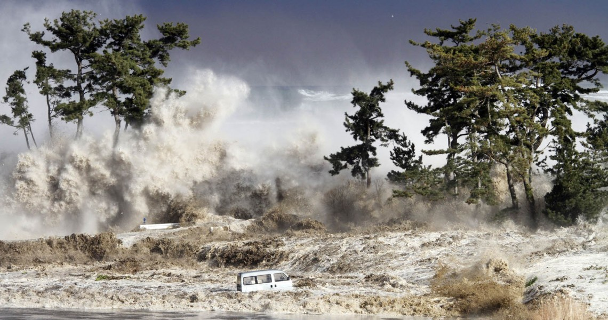

Musibah
Jumat, 1 Mei 2015 01:44
Oleh: KH Husin Naparin
PADA setiap pekan, tidak satu dua orang yang datang kepada penulis menyampaikan tentang musibah yang menimpa dirinya.
Ada yang sekadar curhat, memohon pemikiran penyelesaian, minta bantuan materi, baik meminta atau berutang; ya bermacam-macam keluhan yang disampaikan, ada penipuan, tindak kekerasan, kezaliman, yang terbanyak bermuara pada masalah ekonomi.
Ada anekdot yang saya terima lewat BBM, berbicara kemajuan teknologi, katanya, "orang Amerika memikirkan membuat koloni di bulan, orang India memikirkan geologi dan mineralogi dari bulan, orang Tiongkok memikirkan engeksploitasi barang tambang di bulan, orang Indonesia memikirkan hidup dari bulan ke bulan."
Menurut Kamus Besar Bahasa Indonesia, musibah adalah kejadian (peristiwa) menyedihkan yang menimpa, disebut juga malapetaka, bencana; contoh, "dia mendapat musibah yang beruntun, setelah ibunya meninggal dia sendiri sakit sehingga harus dirawat di rumah sakit."
Contoh lain, "musibah banjir itu datang secara tiba-tiba, rumahnya runtuh, harta bendanya hancur, anak istrinya meninggal."
Penulis kewalahan mencarikan jawaban pertanyaan mereka, "mengapa saya selalu ditimpa musibah beruntun, belum selesai satu musibah muncul lagi musibah baru."
Ada delapan hikmah yang bisa diambil oleh umumnya orang yang tertimpa bencana, yaitu:
1. Agar yang bersangkutan tahu bahwa mencintainya. Nabi saw bersabda "Setiap kali Allah mencintai sekelompok orang, Allah pasti memberi cobaan kepada mereka."(HR Tarmizi).
2. Untuk mengangkat derajat yang bersangkutan. Nabi saw bersabda, "Jika agamanya kuat, maka akan ditambahkan musibahnya." (HR Tarmizi).
3. Agar yang bersangkutan tidak takabur dan tinggi diri. Ini seperti yang dialami Fir’aun ketika tenggelam.
4. Agar yang bersangkutan lebih mendekatkan diri pada Allah.
5. Agar yang bersangkutan tahu bahwa hanya Allah saja Yang Mahakuat.
6. Agar yang bersangkutan tahu posisinya di sisi Allah. Dia berfirman, "Allah sekali-kali tidak akan membiarkan orang-orang yang beriman dalam keadaan kamu sekarang ini, sehingga Dia menyisihkan yang buruk (munafik) dari yang baik (mukmin)" (QS Ali-Imran 179).
7. Agar yang bersangkutan mulai merindukan surga. Allah berfirman, "Apakah kamu mengira bahwa kamu akan masuk surga, padahal belum nyata bagi Allah orang-orang yang berjihad di antaramu dan belum nyata orang-orang yang sabar." (QS Ali-Imran 142).
8. Untuk menumbuhkan solidaritas kolektif. Ini seperti yang terlihat saat bencana besar melanda.
Sayangnya, hikmah ini jarang disadari di awal awal bencana, karena kita terlalu sibuk dan larut dalam emosi. Andai saja mampu menyikapinya secara arif dari menit-menit awal, tentu semua lebih mudah dihadapi. Bahkan, tak jarang Allah mengirimkan pengganti yang lebih baik dari pada yang sudah diambil-Nya.
Kita mesti meyakini Allah pasti punya alasan melakukan semua (Ensiklopedia Mukjizat Al-Qur'an dan Hadis, Hisham Thalbah, Sapta Sentosa, 2008 jilid 1, hal. 219 dst).
Mengembalikan persoalan kepada takdir Allah, adalah jalan yang paling tepat dalam menghadapi musibah. Dia berfirman, “Dan sungguh akan Kami berikan cobaan kepadamu, dengan sedikit ketakutan, kelaparan, kekurangan harta, jiwa dan buah-buahan. Dan berikanlah berita gembira kepada orang-orang yang sabar, (yaitu) orang-orang yang apabila ditimpa musibah, mereka mengucapkan: Inna lillaahi wa innaa ilaihi raaji'uun. (QS Al-Baqarah 155-156).
Dalam ayat sebelumnya Allah swt berseru agar umat beriman memohon pertolongan kepada-Nya dengan sabar dan salat. Dia berfirman,"Hai orang-orang yang beriman, mintalah pertolongan (kepada Allah) dengan sabar dan salat, sesungguhnya Allah beserta orang-orang yang sabar."(QS Al-Baqarah 153).
Ujung dari semua ini akan dicapai keberkatan dan rahmat Allah serta petunjuk-Nya.
Dia berfirman, "mereka Itulah yang mendapat keberkatan yang sempurna dan rahmat dari Tuhanmereka dan mereka itulah orang-orang yang mendapat petunjuk." (QS Al-Baqarah 157).